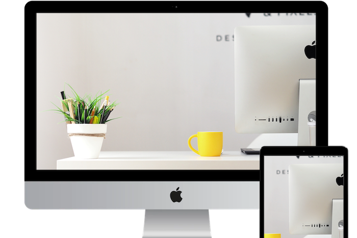

Waar ik je mee kan helpen.
Web Design
Geen kant en klaar design of pakket maar een uniek op maat gemaakt web design waarmee u zich onderscheid van de concurrentie.
Web Development
Onze websites worden zo geprogrameerd dat ze goed werken op ieder formaat scherm, snel laden en goed gevonden worden in zoekmachines.
Gebruiksvrienlijkheid
Een gebruiksvriendelijke website is essentieel om nieuwe klanten te binden en bestaande klanten te houden. Daarom besteden wij extra aandacht aan ux design.

Simpel zelf je website aanpassen
Nieuwe informatie toevoegen, de openingstijden veranderen of een blogpost plaatsen? De websites die ik maak worden geleverd met een gebruiksvriendelijke CMS. Hiermee kun je gemakkelijk zelf de content op de website aanpassen zonder dat je daar technische kennis voor nodig hebt.
Recente projecten


Optimaal op ieder formaat scherm
De websites die ik maak zijn niet alleen responsive zodat ze goed werken op ieder formaat scherm. Ik zorg er ook voor dat ze er even mooi uit zien op alle soorten en maten schermen.
Neem contact met mij op
Ik ben op dit moment beschikbaar voor freelance opdrachten.
Ben je op zoek naar een unieke op maat gemaakte website die voledig aan te passen is aan jouw persoonlijke wensen? Of ben je op zoek naar een developer die jouw design om kan zetten in code? Neem dan contact op via onderstaande knop.